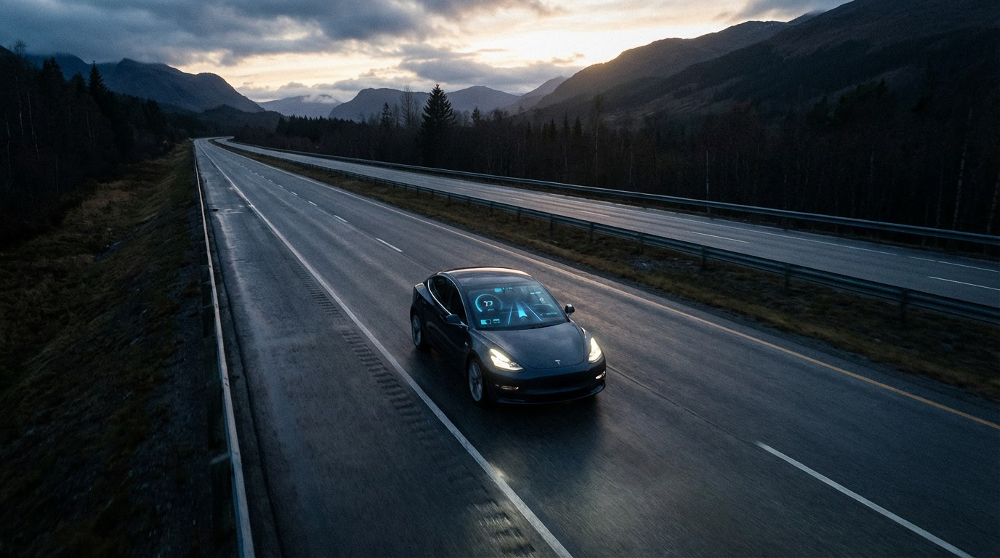

FSD Is Trying to Replace the Safest Drivers in America

On March 18, NHTSA opened engineering analysis EA26002 into Tesla’s Full Self-Driving system. The investigation covers 3,203,754 vehicles—every Tesla equipped with FSD, from 2016 Model S sedans to 2026 Cybertrucks.[1] Nine crashes. One fatality. Visibility detection failures. The usual grim inventory.
But buried in the FARS database is a number that reframes the entire investigation.
The Tesla Model 3 has a fatality rate of 0.05 deaths per 100 million vehicle miles traveled. That is not a typo. For context, the Honda Accord—America’s perennial “safe choice”—sits at 3.07. The Toyota Camry, the vehicular equivalent of a warm glass of milk, clocks 2.03. The Chevy Silverado, 1.25.[2]
Model 3 drivers die at a rate 61 times lower than Accord drivers. Per mile driven.
The Frequency Gap
Death rate alone tells part of the story. Crash frequency tells the rest. Across the FARS dataset, the median vehicle appears in fatal crashes at a rate of roughly 174 per 100,000 fleet vehicles. Sedans like the Cobalt hit 726. The Impala, 852. The Nissan Maxima, 888.
The Model 3? Thirteen.
That crash frequency is 13x below the median. It is the lowest of any vehicle in the dataset with a meaningful fleet size. Lower than the Mazda CX-5 (36). Lower than the Toyota RAV4 (49). Lower than the Ram 1500 (50). In a dataset of 162 vehicles with sufficient data, the Model 3 sits alone at the floor.[2]
What NHTSA Is Actually Investigating
NHTSA’s Office of Defects Investigation says the problem is FSD’s degradation detection system—its ability to recognize when cameras can’t see properly and alert the driver in time. Glare, fog, airborne debris. In the nine reviewed crashes, FSD either failed to detect degraded visibility or issued alerts “immediately before impact.” In some cases, the system lost track of a lead vehicle entirely.[1]
This is a legitimate safety defect. Nine crashes is nine crashes. One death is one death.
But the paradox is structural: the technology under investigation is deployed on vehicles whose human operators already achieve the best safety outcomes in the entire FARS dataset. FSD isn’t trying to improve upon Chevy Cobalt drivers (crash frequency: 726, death rate: 5.10). It’s trying to improve upon Model 3 drivers (frequency: 13, death rate: 0.05).
The marginal safety value of automation is inversely proportional to how safe the baseline driver already is. And this baseline is, by every available metric, the safest in America.
Why the Baseline Is So Low
Before anyone credits Elon Musk with curing traffic death, the Model 3’s numbers deserve scrutiny.
Three factors likely compress that 0.05 rate:
Fleet age. The Model 3 entered production in 2017. FARS data spans 2014–2023, meaning the oldest Model 3 in the dataset is nine years old. Meanwhile, the Accord and Civic carry death counts accumulated from 1990s-era vehicles—cars with no side curtain airbags, no ESC, no AEB. Comparing a 2017+ fleet to a 1990-2023 fleet is inherently unfair to the older vehicles.[3]
Owner demographics. Model 3 buyers skew affluent, educated, suburban. These demographics drive fewer miles at dangerous hours, on better-maintained roads, with lower impairment rates. The vehicle is a proxy for its owner’s socioeconomic position—and wealth buys safety long before it buys a Tesla.
Active safety tech. Every Model 3 ships with automatic emergency braking, forward collision warning, and lane departure warning. These features prevent crashes from reaching FARS in the first place. The low crash frequency may reflect the car catching mistakes before they become fatalities, not the driver making fewer mistakes.[4]
Strip away these confounders and the Model 3 probably still outperforms the dataset average. But the 61x gap over the Accord? That’s not all vehicle. That’s demographics and fleet age doing heavy lifting.
The Counterargument at Full Strength
Tesla’s own robotaxi crash data—reported in January 2026—shows an autonomous crash rate roughly three times worse than human drivers under comparable conditions, even with a safety monitor present.[5] If FSD is degrading an already excellent baseline, the investigation isn’t just about nine crashes. It’s about whether the technology makes an exceptionally safe fleet less safe.
This is the strongest case against FSD: it may be replacing the safest driving population in America with software that crashes three times more often. The low FARS baseline doesn’t make the investigation less important. It makes it more important.
What the Data Doesn’t Show
FARS only captures fatal crashes—the roughly 40,000 annual deaths that sit atop 6.7 million total crashes and 2.5 million injuries. A vehicle can have a low fatality rate while generating plenty of fender benders and injury collisions that never reach this dataset.
We also cannot separate FSD-engaged crashes from human-driven crashes within the Model 3’s FARS records. The 0.05 rate blends both operating modes. NHTSA collects ADAS engagement data through its Standing General Order, but FARS doesn’t tag individual crashes by autonomy level.
The VMT estimates for electric vehicles carry additional uncertainty. Model 3 owners may drive more or fewer annual miles than the national average used in rate calculations, introducing ±15–20% error in the denominator.
The Bottom Line
NHTSA should absolutely investigate FSD’s visibility detection failures. Nine crashes and a death demand scrutiny regardless of the fleet’s baseline risk.
But the FARS data adds a dimension the investigation doesn’t address: the people FSD is supposed to protect are already the least likely to die on American roads. The technology isn’t automating away the 5.10-death-rate Cobalt or the 6.02-death-rate Mustang. It’s automating away the 0.05-death-rate Model 3.
If the goal is reducing the 40,000 annual traffic deaths, the FARS data is clear about where the leverage is. And it is not behind the wheel of a Tesla.
Sources & References
- NHTSA Office of Defects Investigation, Engineering Analysis EA26002, opened March 18, 2026. Coverage: 3,203,754 Tesla vehicles equipped with FSD. Motor Illustrated report
- NHTSA, Fatality Analysis Reporting System (FARS), 2014–2023. Death rates, crash frequencies, and fleet estimates derived from FARS bulk data. nhtsa.gov
- IIHS, “Life-saving benefits of ESC continue to accrue,” documenting how newer safety technologies reduce fatal crash involvement. iihs.org
- IIHS, Vehicle ratings for Tesla Model 3 — Top Safety Pick+. iihs.org/ratings
- Electrek, “Tesla’s own robotaxi data confirms crash rate 3x worse than humans even with monitor,” January 29, 2026. electrek.co